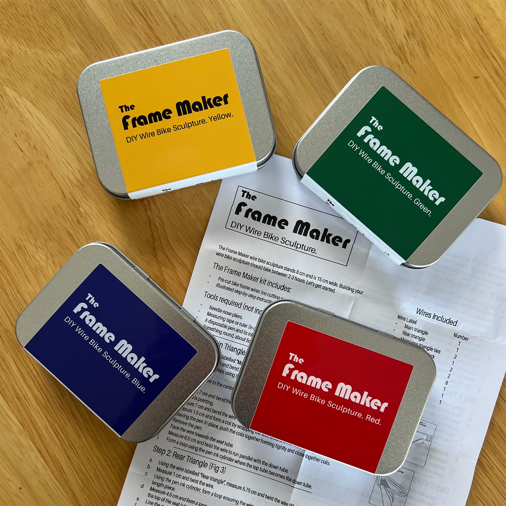
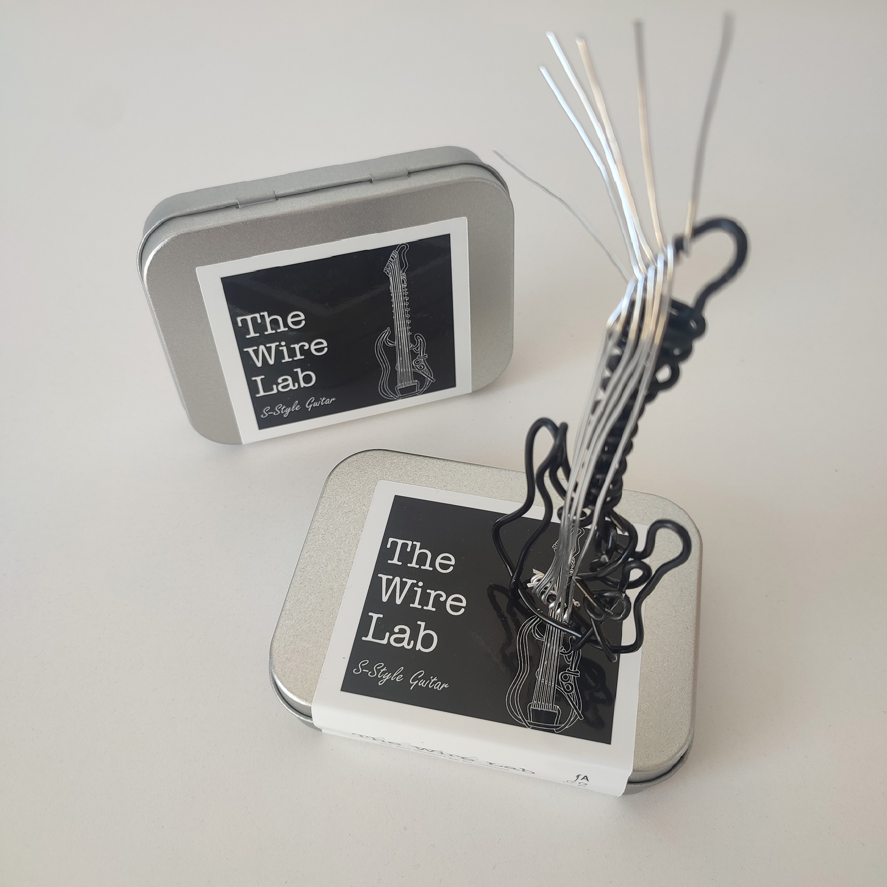
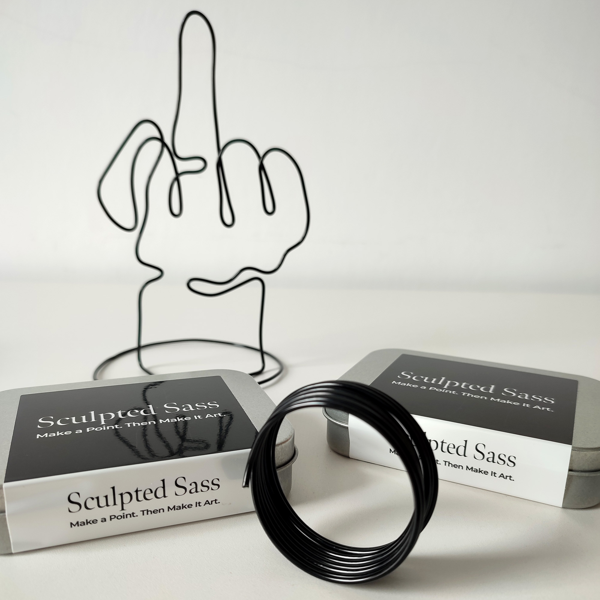
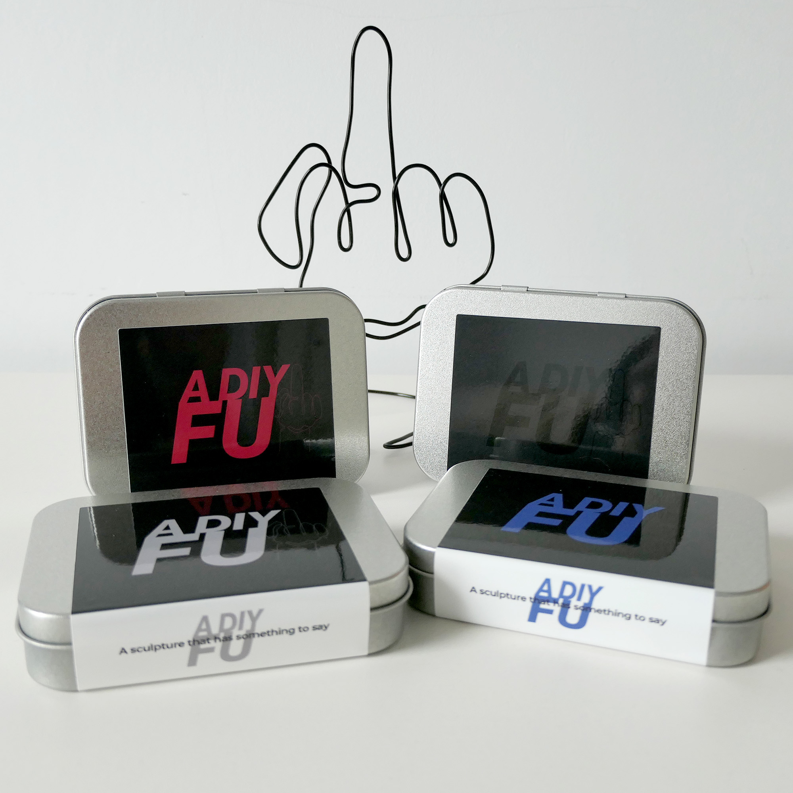
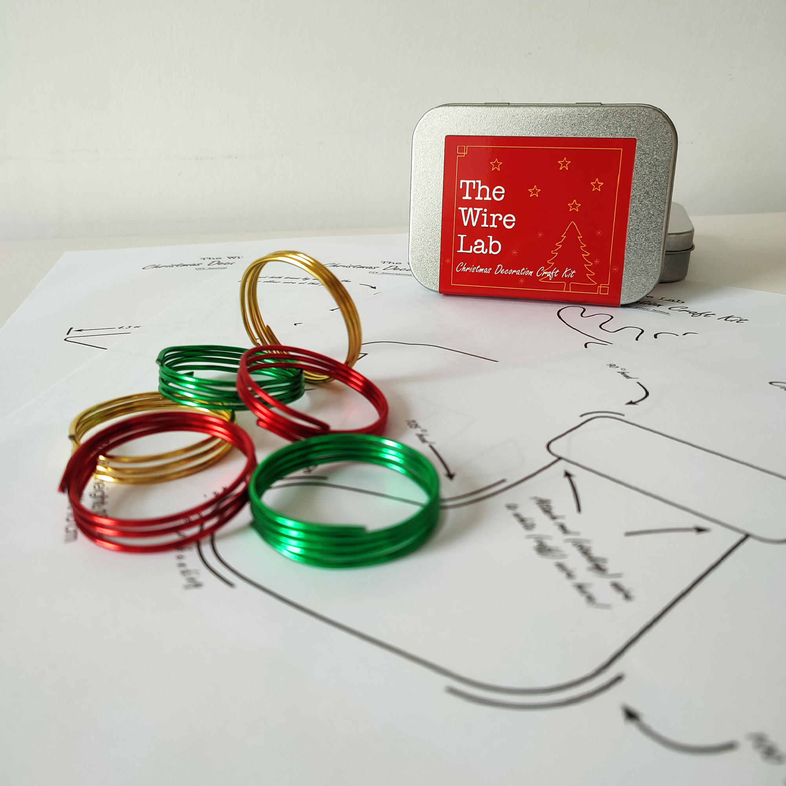

The Wire Lab
Built on the idea that if it’s a passion, it’s worth sculpting.
Hands-on DIY wire sculpture kits designed for tinkerers, makers, and hobbyists.





Built on the idea that if it’s a passion, it’s worth sculpting.
Hands-on DIY wire sculpture kits designed for tinkerers, makers, and hobbyists.




